This Issue
August 2026 edition
51.7% vs 23.2%
Multnomah County share of flip resales this edition, against its share a year ago
Flip exits halved and moved inside the city: Multnomah is 51.7% of resales versus 23.2% a year ago
Flip resales fell to 89 from 177 a year ago, and the ones that closed sat closer in: Multnomah accounted for 51.7% of resales versus 23.2% a year ago, and the median distance from the central business district was 11.9 km versus 17.9 km. The stock moved with the map — median year built 1964 versus 1998, and 28.1% pre-1950 versus 16.4%. Fewer, older, closer-in projects carried wider gross spreads: median margin $173,000 (48.3%) against $122,400 (33.3%) a year ago, on a 171-day median hold versus 227. Rehab and carry are not public record, so margins are gross.
Investor Playbook
What this issue's numbers suggest checking, by investor type. Observations from recorded data — not investment, legal, or tax advice.
Fewer assignments, wider spreads — feed the inner-Portland buyer
Wholesalers
Only 5 assignments surfaced on recorded deeds, flat against the prior period and down from 16 a year ago, but the median spread was $50,000 versus $32,000 a year ago. Recorded wholesale counts are a floor. With flip resales concentrated in Multnomah at 51.7% and the median resale property built in 1964 at 1,516 sqft, the data suggests dispositions run easier on older three-bedroom houses in 97217 (7 flips), 97206 (4) and 97211 (4) than on the outer-county product buyers walked away from.
Check basis before following the crowd back inside the city
Flippers
Flip resales cleared at a $520,000 median and $335.61/sqft, against a single family purchase median of $539,800 at $315/sqft — the gap between what investors are paying and what flips exit at is narrow. Washington County's share of resales fell from 32.2% to 11.2% and Clark's from 23.2% to 10.1%, so exit comps in those counties are thinner this period. Median hold is 171 days versus 227 a year ago; underwriting at that pace, and to the 1.077 median sale-to-assessed ratio, is worth testing before bidding.
The per-foot discount is in 2-4 units, not houses
Landlords
2-4 unit purchases, 80 deals at a $632,500 median, priced at $270/sqft against $315/sqft for single family and $311/sqft for condos. Mobile and manufactured, 26 deals at $411,500, came in at $268/sqft. With 1,328 local landlords adding units (+1,647 units) since the last drop, competition on houses is heavy; the data suggests the small-multi and manufactured lanes are where basis per foot is currently lowest.
Fill the gap on older inner-city rehabs
Private lenders
Recorded private loans ran 47 at a $355,000 median versus 98 a year ago, while seller notes rose to 161. Over the trailing twelve months the median loan was $374,514 at a median loan-to-price of 1.0, and 228 of 468 financed purchases carried rehab dollars. Named lenders are already thick at the larger end — CoreVest 24 loans at a $513,575 median, Kiavi 13 at $458,200. The thinner ground looks like the $250,000–$400,000 rehab draw on pre-1950 Multnomah stock, which is 28.1% of this period's flip resales. Interest rates and terms are not recorded and are not published here.
Small multi stays a rounding error in the flip data
Multifamily investors
Small multi was 2.2% of flip resales, up from 1.1% a year ago — three 2-4 unit flips at a $192,000 median margin and $93/sqft. On the buy side, 11 multi-family (unspecified) trades cleared at a $2.8M median and $200/sqft, and 7 apartment 5+ deals at an $8.15M median. With so few resale comps, worth leaning on the 80 2-4 unit purchases at $632,500 and $270/sqft for basis rather than on flip exits.
Factoids
Numbers from this period a practitioner would repeat to a colleague. Each computed directly from recorded instruments.
1,775 investor purchases — Recorded investor purchases this edition, median $525,000
trending up · vs 1,395 a year ago, median $550,000
Buy-side volume is up 27% year over year while the median ticket is $25,000 lower. Acquisition appetite is not the constraint on flip resales this period.
18% of purchases from out of state — Out-of-state share of investor purchases, median price $574,995 against local buyers at $513,748
holding steady · vs local buyers at 73% of purchases
California leads feeder states with 119 purchases, then Arizona at 43 and Texas at 20. Out-of-state paper is clearing at a higher median than local buyers, which matters when you are bidding the same listing.
67 flip operators — Distinct operators recording a flip resale this edition
trending down · vs 103 a year ago
The seller field has thinned by a third while the top ten operators took 41.4% of flip revenue, up from 39.7%. Fewer, larger sellers are setting comps in the resale bands you are pricing against.
47 private loans recorded — Recorded private loans this edition, median $355,000
trending down · vs 98 a year ago, median $315,836
Half as many recorded private loans at a higher median size. Over the trailing twelve months 71.1% of observed investor purchases were financed and 48.7% of those 468 loans included rehab funds.
161 seller-financed notes — New seller-held notes recorded this edition, median $350,000
trending up · vs 96 a year ago, median $387,500
Seller paper is up 68% year over year at a median $37,500 below last year's note size. It is currently the deeper of the two non-bank channels in these records.
$270/sqft on 2-4 units — Median price per square foot paid for 2-4 unit purchases versus single family this edition
trending down · vs $315/sqft for single family
Eighty 2-4 unit deals cleared at a $632,500 median, a $45/sqft discount to single family basis. Condos, 219 deals at a $329,900 median, priced at $311/sqft — close to houses on a per-foot basis.
Market Activity — Investor Purchases
Monthly count of investor purchases of MSA properties (left axis) and the median purchase price (right axis), trailing 13 months. The most recent month can grow up to ~15% as late recordings arrive.
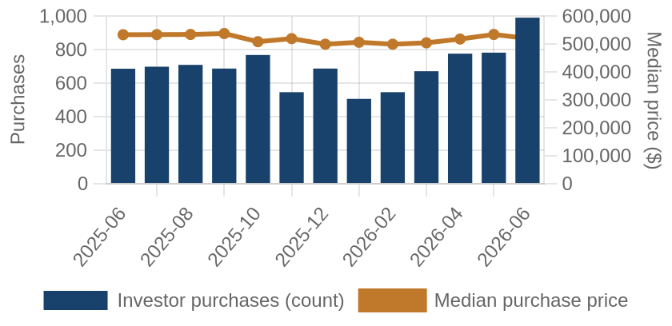
Investor purchases per month (bars) and median purchase price (line), trailing 13 months.
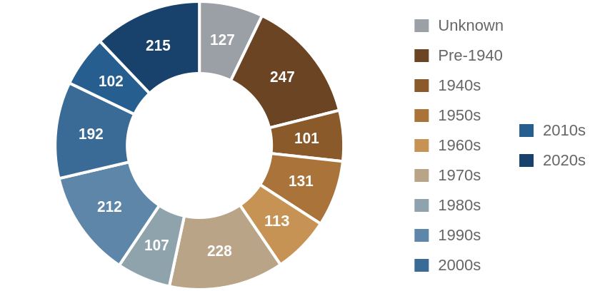
Which vintage of housing investors bought this edition, by decade built.
Where the Money Went
The geography of the period's investor activity: which zip codes saw the most recorded deals, and the largest individual transactions at street level.
The 8 busiest zip codes for investor deals
Pins rank the busiest zips by recorded investor deals (purchases + flips of existing homes) this period — #1 busiest; orange = top 3; pin size scales with deal volume. Median buy is the typical investor purchase; median sale the typical flip resale. Click a pin for details; full table below.
| # | Zip | Area | Purchases | Flips | Median buy | Median sale |
|---|
| #1 | 97229 | Bethany | 54 | 1 | $784,500 | n/a |
| #2 | 97217 | Kenton | 43 | 7 | $435,000 | $550,000 |
| #3 | 97206 | Foster-Powell | 43 | 4 | $400,000 | n/a |
| #4 | 97219 | Multnomah Village | 41 | 1 | $511,000 | n/a |
| #5 | 97202 | Sellwood / Westmoreland | 40 | 1 | $597,950 | n/a |
| #6 | 97035 | Lake Oswego West | 34 | 5 | $663,500 | $750,000 |
| #7 | 97080 | GRESHAM | 34 | 2 | $507,498 | n/a |
| #8 | 97007 | Beaverton South | 34 | 1 | $622,000 | n/a |
A representative deal in each of the busiest zips
One deal per zip: the largest matching this market's typical house (typical for this market: 1531 sqft, 3 bed, built around 1970; priced within 4x the county assessment and under 5x its own zip's median).
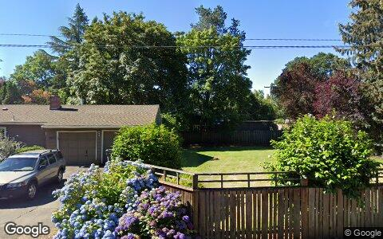
$1.8M · Flip
4430 LORDS LN, Lake Oswego OR 97035
Single family · 1,229 sqft · May 27
Street View Jun 2024 — before the purchase
$1.1M · Purchase
15715 SW DIVISION ST, Beaverton OR 97007
Single family · 2,390 sqft · Jun 24
Street View Apr 2024 — before the purchase
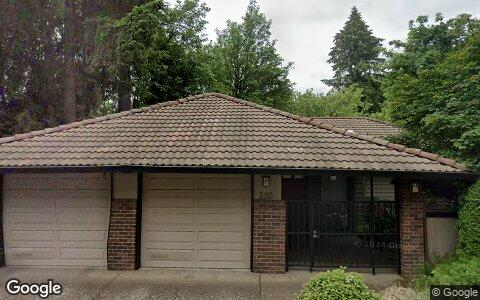
$935,000 · Purchase
230 S CANBY ST, Portland OR 97219
Single family · 2,408 sqft · Jun 3
Street View May 2024 — before the purchase
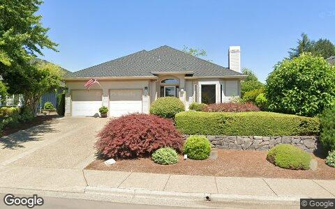
$925,000 · Purchase
15715 NW CLAREMONT DR, Portland OR 97229
Single family · 2,233 sqft · Jun 3
Street View Jul 2024 — before the purchase
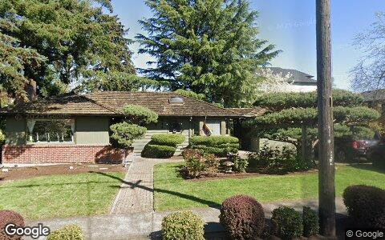
$875,000 · Purchase
2730 SE 66TH AVE, Portland OR 97206
Single family · 2,346 sqft · Jun 29
Street View Apr 2025 — before the purchase
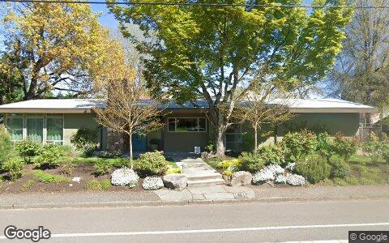
$850,000 · Purchase
3331 SE STEELE ST, Portland OR 97202
Single family · 1,888 sqft · May 22
Street View Apr 2025 — before the purchase
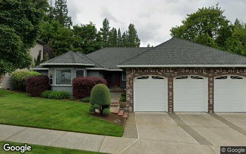
$705,000 · Purchase
2581 SE MORLAN WAY, Gresham OR 97080
Single family · 2,336 sqft · Jun 24
Street View May 2025 — before the purchase
$612,000 · Purchase
2214 N EMERSON ST, Portland OR 97217
Single family · 1,144 sqft · Jun 12
Street View Apr 2025 — before the purchase
Deal sheet — private lending, in date order
Private loans recorded against residential property this period, oldest first.
| Date | Lender | Amount | Property | Use |
|---|
| May 4 | Coronado Jason | $260,000 | 1526 Ne 150TH Ave, Portland ID 97230 | Single family |
| May 5 | Brown Heather | $285,000 | 152 Ne 33RD CT, Hillsboro OR 97124 | Single family |
| May 7 | Bogdan Viorica | $264,000 | 10300 Ne Ward RD, Brush Prairie OR 98606 | Mobile / manufactured |
| May 7 | Bogdan Viorica | $264,000 | 10300 Ne Ward RD, Brush Prairie OR 98606 | Mobile / manufactured |
| May 7 | Bogdan Viorica | $264,000 | 10300 Ne Ward RD, Brush Prairie OR 98606 | Mobile / manufactured |
| May 7 | Jones Daron | $140,000 | 18558 SW Takena CT, Beaverton WA 97003 | Single family |
| May 7 | Jones Daron | $140,000 | 18544 SW Takena CT, Beaverton WA 97003 | Single family |
| May 8 | Fromm Jens | $400,000 | 1108 N Hadley RD, Newberg WA 97132 | Single family |
Largest flip margin deals of the period, at street level
Gross margin = recorded sale price minus the flipper's recorded purchase price. Purchase deeds are recoverable for roughly 4 in 10 flips; rehab and carry costs are not public record.

$1.8M gross · bought $712,000 (Dec 2024) → sold $2.5M
4430 LORDS LN, Lake Oswego OR 97035
Single family · 1,229 sqft · May 29
Street View Jun 2024 — before the flip (pre-renovation)
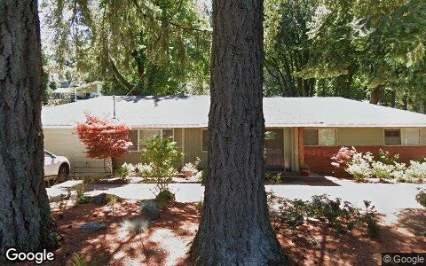
$1.7M gross · bought $700,000 (Mar 2025) → sold $2.4M
2764 GLEN HAVEN RD, Lake Oswego OR 97034
Single family · 1,714 sqft · May 8
Street View Jun 2024 — before the flip (pre-renovation)
$1.1M gross · bought $1.2M (Oct 2025) → sold $2.3M
1209 SW HESSLER DR, Portland OR 97239
Single family · 2,584 sqft · May 15
Street View Jul 2024 — before the flip (pre-renovation)
$985,000 gross · bought $365,000 (Dec 2024) → sold $1.4M
226 NW MACLEAY BLVD, Portland OR 97210
Single family · 1,685 sqft · Jun 18
Street View May 2024 — before the flip (pre-renovation)
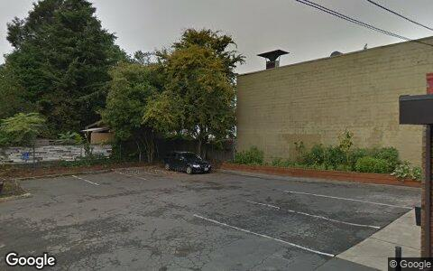
$490,000 gross · bought $275,000 (Jan 2025) → sold $765,000
236 NE SACRAMENTO ST, Portland OR 97212
Single family · 1,838 sqft · May 29
Street View Oct 2018 — before the flip (pre-renovation)
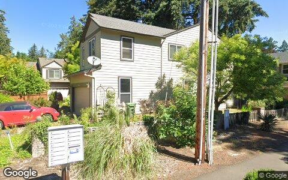
$475,296 gross · bought $399,704 (May 2025) → sold $875,000
17350 ASHLEY CT, Lake Oswego OR 97035
Single family · 2,290 sqft · May 1
Street View Jun 2024 — before the flip (pre-renovation)
Flip Structure — Year over Year
How the flip market itself is changing: margins, who is doing the flipping, what they flip, and where. Same two calendar months, this year vs last, from the current data extract.
| Flip market structure | Same months last year | This edition |
|---|
| Flips sold | 177 | 89 |
| Median sale | $529,900 | $520,000 |
| Median $/sqft | $326 | $336 |
| Sale vs county-assessed | 1.07× | 1.08× |
| Median gross margin (matched buys) | $122,400 | $173,000 |
| Median margin % | 33% | 48% |
| Median hold | 7.5 mo | 5.6 mo |
| Homes bought by flippers | 194 | 160 |
| Net to inventory (bought − sold) | +17 | +71 |
| Active flippers | 103 | 67 |
| Top-10 flippers' revenue share | 40% | 41% |
| Median house: sqft / beds / built | 1693 / 3 / 1998 | 1517 / 3 / 1964 |
| Pre-1950 stock share | 16% | 28% |
| 2–4 unit share | 1% | 2% |
| Median distance from downtown | 17.9 km | 11.9 km |
Homes bought counts every deed recorded to a known flipper in the window, resold or not. Net to inventory is that minus flips sold. The standing stock is in the Flip Pipeline section.
Attributed profit per flip (per-investor aggregates, by drop period): Feb 26→Jun 26: 689 flips, n/a (revisions) · Jun 26→Aug 26: 262 flips, n/a (revisions).
County mix (share of flips, last year → this edition): Multnomah 23%→52% · Clackamas 15%→22% · Washington 32%→11% · Clark 23%→10% · Yamhill 5%→3% · Columbia 2%→1%.
Biggest zip share moves: Hillsboro 8.5%→1.1% · Kenton 1.7%→7.9% · Tualatin 6.2%→1.1% · Rockwood 0.0%→4.5% · Felida 4.0%→0.0% · Orchards 4.0%→0.0%.
Flip Pipeline — Buying, Selling and Inventory
Homes bought by known flippers and homes they resold, per month, alongside the stock sitting in flipper hands. A house enters inventory when a flipper buys it and leaves on the next recorded sale, at any price. Purchases still unsold after five years are treated as holds and drop out.
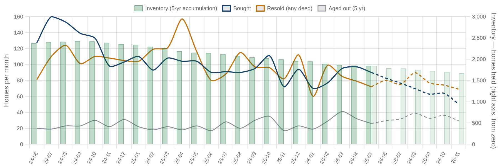
Solid = recorded, dashed = projected. Green bars are inventory on the right axis: homes bought and not yet resold. Aged out is purchases passing five years unsold. Inventory moves by bought minus resold minus aged out.
| Flip pipeline | Bought / mo | Resold / mo | Aged out / mo | Inventory |
|---|
| Latest recorded month (2026-05) | 90 | 72 | 26 | 1,842 |
| Projected (2026-11) | 50 | 69 | 29 | 1,671 |
Method: a straight-line trend through the last 24 months, adjusted for the month of the year, shown dashed as a projection. The series stops before the newest month or two, where deeds are still recording.
Who's Funding the Deals
First mortgages open on flipper purchases from Jul 2025 – Jun 2026 that have not yet resold. 71% carried recorded debt; the rest closed cash or off-record. Ranked by deal count.
71%
Purchases financed
468 of 658 flipper purchases carried a recorded first mortgage
$374,514
Typical loan
median 1.00× the purchase price
49%
Funding the rehab too
228 of 468 loans exceed the purchase price, so the lender is covering work as well as the buy
| Lender | Loans | Borrowers | Median loan | Loan vs price | Funds rehab | Median purchase |
|---|
| Corevest American Fin LNDR LLC | 24 | 7 | $513,575 | 1.15× | 92% | $446,500 |
| Legacy Lending LLC | 16 | 12 | $377,852 | 1.16× | 81% | $355,000 |
| Merchants Mortgage NW LLC | 16 | 10 | $325,125 | 1.11× | 75% | $317,250 |
| Kiavi Funding INC | 13 | 8 | $458,200 | 1.23× | 85% | $399,000 |
| Blackhawk Capital Group | 11 | 4 | $255,271 | 0.85× | 0% | $295,000 |
| Iron Bridge Mortgage Fund LLC | 10 | 7 | $630,000 | 1.08× | 60% | $430,000 |
| Rain City Cap LLC | 9 | 8 | $311,950 | 1.00× | 56% | $302,500 |
| Mortgage Research Center LLC | 7 | 4 | $393,855 | 1.11× | 71% | $343,345 |
| Onpoint Community Credit Union | 7 | 7 | $388,000 | 0.64× | 0% | $530,000 |
| Pennymac Loan Services LLC | 7 | 5 | $375,279 | 1.04× | 57% | $420,000 |
Rates and terms are not published: the county feed models both. Borrowers counts the distinct flippers on each lender's book. Loan vs price is the recorded first mortgage divided by what the buyer paid. Above 1.00x the lender is funding purchase plus rehab; below it the buyer brought cash to the table. Blanket mortgages covering several parcels are excluded, as are loans outside 0.1x-3x the price. Rates and points are not public record.
Flipper Profile — The Working Flipper
The 70th–90th percentile of local flippers by lifetime flip count — the established operators below the whales: 4–9 lifetime flips each. Bath counts are not in the assessor extract.
165
Flippers in the band
each with 4–9 lifetime flips (avg 5.4)
$100,000
Median gross margin
2,835 flips matched to their purchase price
6.3 mo
Typical hold
purchase to resale, matched deals
1531 sqft · 3 bd
Typical house
median year built 1970
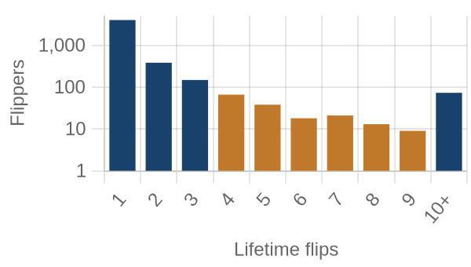
flippers by lifetime flips · orange = this band
Where they work: Foster-Powell (97206) 5% · Woodlawn (97211) 4% · Oak Grove (97267) 4% · Kenton (97217) 4% · Camas (98607) 3%.
Market Pulse
| per month, Feb–Jun 2026 | per month, Jun–Aug 2026 | change | avg/mo 2yr | avg/mo 4yr |
|---|
| ▼ Homes bought by flippers | 97 | 80 | -18% | 104 | 109 |
| ▼ Flips sold (deeds) | 89 | 45 | -50% | 101 | 107 |
| ▲ Lending deals funded | 43 | 97 | +126% | — | — |
| ▲ Seller/notes held (net) | 91 | 100 | +10% | — | — |
| ▼ Investors (net) | 136 | 6 | -96% | — | — |
Flips and flipper purchases = recorded deeds, same two months each year; their 2- and 4-year columns are per-month averages of the deed series. The remaining rows come from the investor file, which spans 13 months, so they have no multi-year average (2026: Jun 2026 → Aug 2026; 2025: Feb 2026 → Jun 2026).
Past Issues
Methodology
Source Data
County recorder & assessor via FARES
Every figure is computed from recorded instruments (deeds, mortgages, assignments) and assessor property records for the five counties of the Portland-Vancouver-Elyria MSA. No surveys, no estimates, no listings data.
This edition analyzes transactions dated May 1 – June 30, 2026, as recorded through the 2026-08 data extract.
Who Counts as an Investor
Transaction-pattern identification
Investors are entities whose recorded transaction history looks like investing: rental holding (landlords), short-hold resales (flippers), private mortgage lending, note holding, or contract assignment (wholesalers). Banks, homebuilders, iBuyers, SFR funds, and government entities are identified by name and reported separately from small investors.
How Comparisons Work
Attribution deltas + same-window comparisons
The Market Pulse reports activity attributed between successive data drops, from the per-investor lifetime totals maintained upstream — periods differ in length, so per-month rates are shown. Elsewhere, "vs. year ago" compares the same calendar months one year earlier, counted from the same data extract. Transfers under $5,000 (quitclaims, partial interests) are excluded everywhere. Counts lag recording by 4–8 weeks, and the newest month can grow up to ~15% as late records arrive — direction is reliable before magnitude.
Known Limits
Floors, not ceilings
Wholesale assignments only appear when they touch a recorded deed, so those counts are a floor. Flip hold times are measured from the prior recorded sale. Names are the owner of record, which may be an LLC or trust.
About
Purpose
A working tool for small real estate investors in Greater Portland-Vancouver: what actually closed, where, at what prices, and what it suggests checking next — one theme per issue.
Cadence
Published with each bi-monthly data drop, covering the two most recent complete months of recorded activity.
Disclaimer
Observations from public records, not investment, legal, or tax advice. Past activity does not guarantee future results. Verify any property or counterparty independently before transacting.